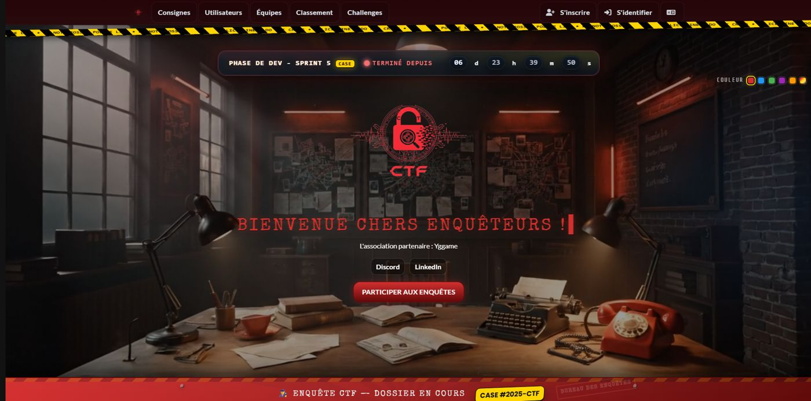
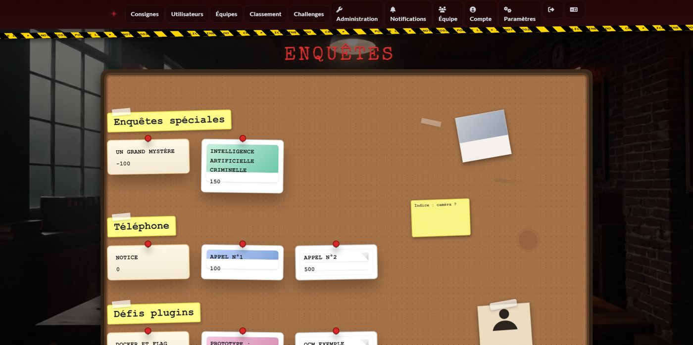
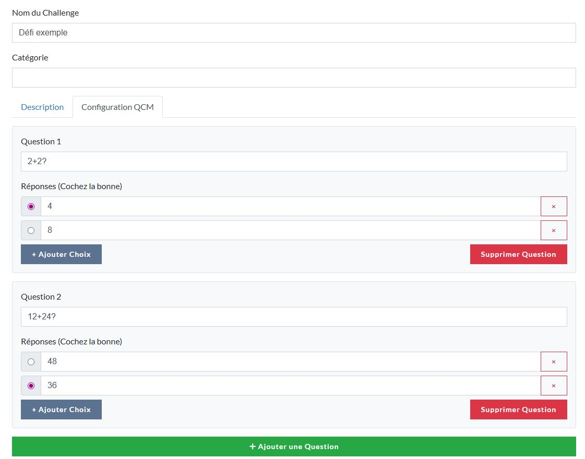
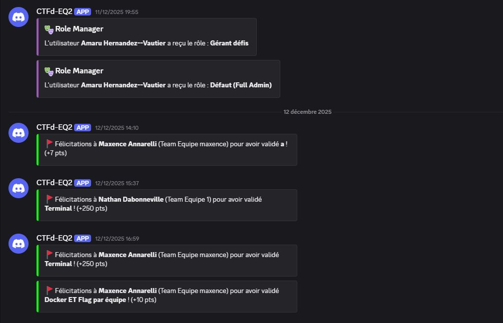
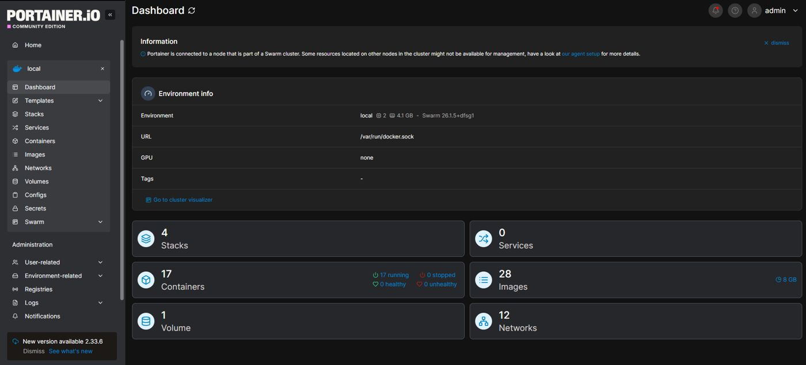
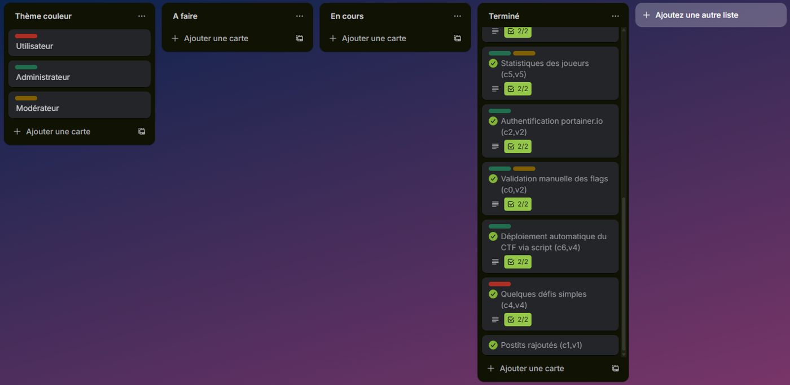

Projets / SAÉ 3.01
CTF « Case 404 ».
Une plateforme de Capture The Flag conçue, développée et déployée pour l'association Yggame, sur le thème d'une enquête.
- Équipe
- 4 étudiants · Scrum
- Durée
- 5 sprints
- Contenu
- 30 challenges
- Note
- 19,5 / 20

Mon rôle
- Infrastructure et déploiement : Docker Compose, Portainer, reverse proxy Nginx.
- Sécurité réseau : accès restreint par liste blanche d'adresses IPv4.
- Plugins CTFd : rôles personnalisés, multi-flags, QCM, challenges flash, annonces, webhook Discord.
- Interface du thème « Case 404 ».
Les challenges
30 challenges répartis en 9 catégories.



Une difficulté
Le plugin QCM entrait en collision avec le CSS du thème.
Diagnostic dans les DevTools, CSS ciblé et isolation des templates, puis tests de non-régression sur les autres pages.
Infra & organisation


Compétences